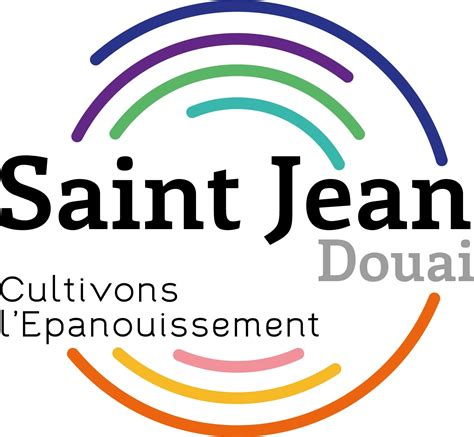

La progression et le carnet sont conservés dans ce navigateur. Sur un poste partagé, exportez votre travail avant de partir.
Cette action efface uniquement votre travail sur cet appareil.
Parcours de seconde SI/CIT conçu autour du module « Analyser un système » de Monsieur Hage. Les valeurs des exemples constituent des données d’étude, pas les résultats d’un essai réel.
Fonctionnement sans compte élève, sans publicité et sans envoi du carnet à un serveur. L’entraînement est libre. Les points de progression ne constituent pas une note scolaire.
Activez JavaScript pour accéder aux activités. Les capsules et le cours nécessitent les fichiers du dossier complet.